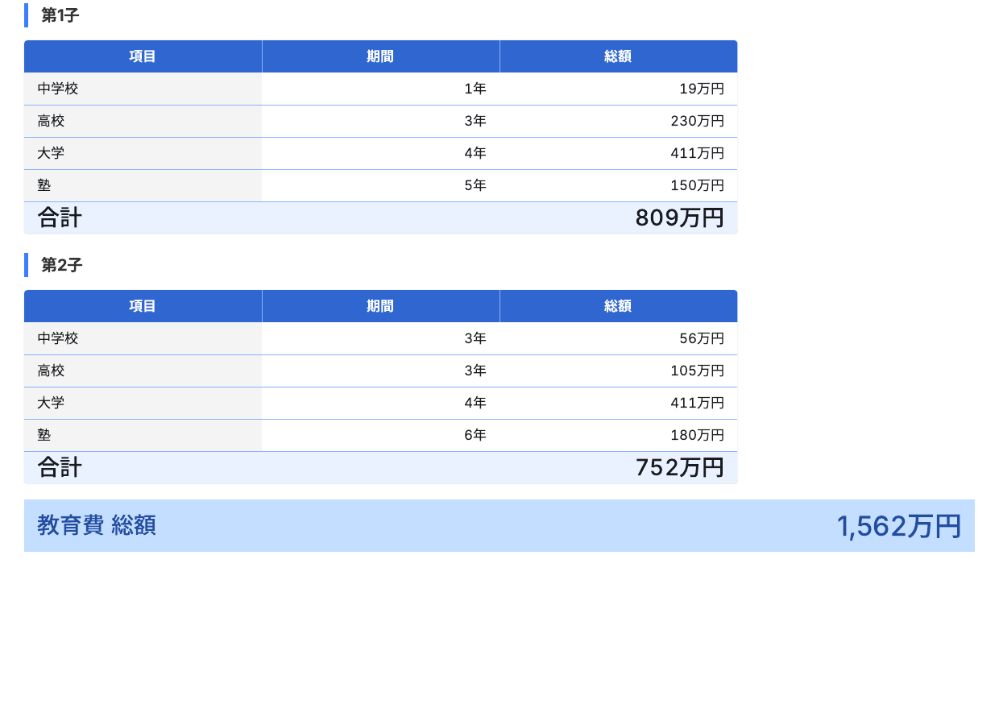
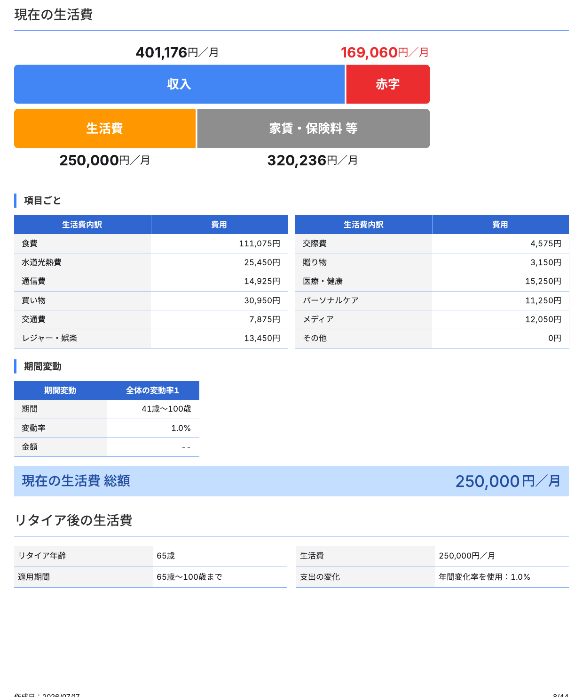
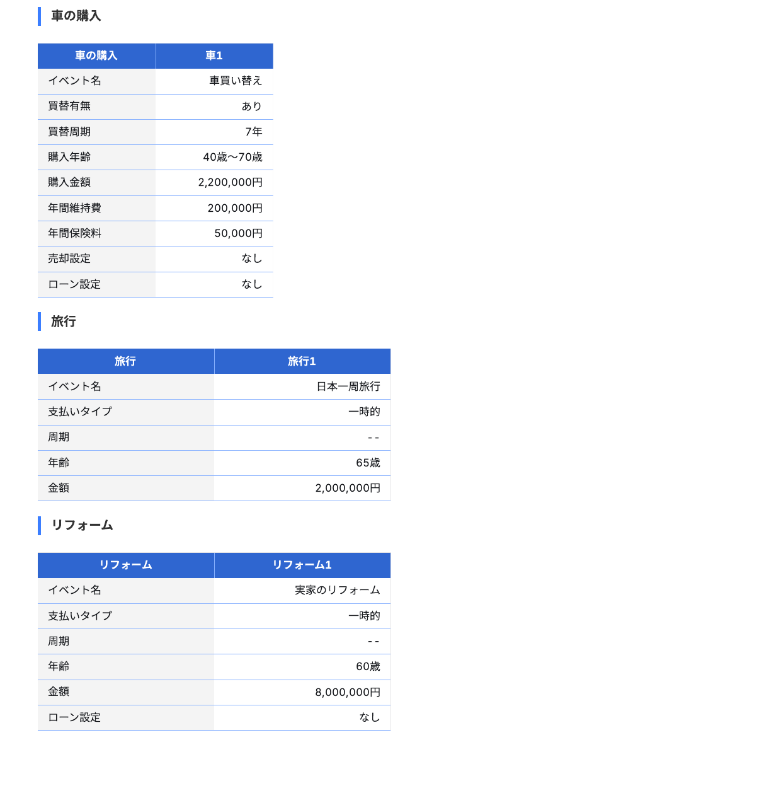
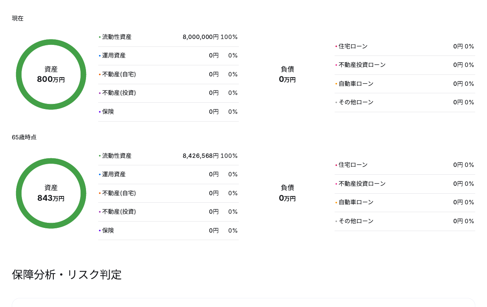

「44ページ」を、スマホで一目で伝える
各案は実機幅(390px)の枠で表示しています。
案 1
紙の束の、高さ比較
コンセプト：「44」を数字でなく高さの差 で見せる。比較対象を置いて相対化する。
44ページ、というのは
1ページ1ページ、あなたの数字 で計算します。
案 2
44マスの、ページ一覧
コンセプト：44を数えられる形 で並べる。実ページ8枚を、実際のページ番号の位置に埋める。
これが、44ページです。
青く光っている8枚が、実物のページです。

04 
08 
09 
10 12 13 15 20
1マスが、1ページ。全部あなたの数字で、44枚。
案 3
指で「めくる」ページ
コンセプト：スワイプして自分の指で量を体感 させる。最後に「+36ページ」で締める。
中を、めくってみてください。
← 横にスワイプできます
P.12 100年分の、資産推移
P.13 1歳きざみ、60年分の収支表
P.15 お金の、出入りの全体像
P.20 万一のときの、過不足
+36 ページ、続きます P.21–44 改善プランまで、全部あります
合わせて、全44ページ 。
案 4
扇状に広げたページ
コンセプト：トランプのように扇で広げ、複数枚あること を一枚絵で見せる。
1冊に、これだけ入っています。
この調子で、44ページ あります。
案 5
本の「目次」フォーマット
コンセプト：既存のリストを、本物の目次の書式 （リーダー線＋ページ範囲）に置き換えるだけ。
C O N T E N T S
ライフプラン設計書／目次
1. いまの現状収入・支出・資産・備えの棚卸し
P.1–8 2. 100年分の資産推移何歳で、いくら足りなくなるか
P.9–18 3. 60年分の収支表1歳きざみの、収入と支出と残高
P.19–30 4. 万一のときの過不足残された家族に、いくら必要か
P.31–36 5. 改善プランで、何をすればいいのか ← ここが本題
P.37–44
総ページ数 44 ページ
案 6
ノンブル「13 / 44」と、残りページ
コンセプト：1ページを見せながら「これで13枚目。まだ31枚ある」 と残量を突きつける。
これで、まだ13枚目です。
この密度の紙が、あと31枚 続きます。
案 7
背表紙メーター（現行の改良版）
コンセプト：現行の縦棒グラフを、1本の背表紙 にまとめて章の比率を見せる。
44ページの、内訳です。
赤い部分が改善プラン 。
案 8
別の単位に、換算する
コンセプト：ページ数をマス目の数・年数・厚み という別単位に置き換えて量を実感させる。
44ページを、
40歳から100歳まで、1年も飛ばしません。その全部が、あなたの数字です。
案 9
開いた見開き
コンセプト：閉じた本（LP冒頭に既出）ではなく、開いて中を見せる 。
開くと、こうなっています。
12 13
この見開きが、22組 。
結論
推奨の組み合わせ
案1（厚み比較）→ 案5（目次）→ 案3（スワイプ） の順で1セクションを構成するのが最適です。案1＋案5だけ（画像不要・約1時間） でも効果は出ます。
 12
12
 13
13
 15
15
 20
20